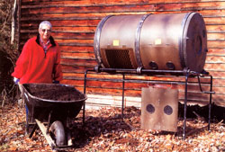
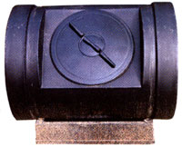
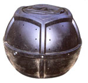
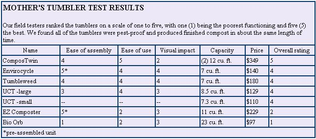
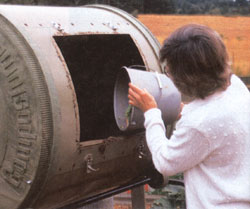
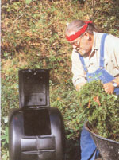
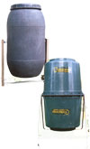

You've seen the ads: "Now you can have dark, rich compost in just a few weeks!" What an appealing message. Whether you grow flowers, vegetables, herbs or houseplants, compost is "black gold" in the garden. We never have enough of it, and can't make it fast enough. Compost tumblers, the ads say, can give us a steady supply every couple of weeks. Designed so you can crank, turn or roll the container to turn and aerate the compost, tumblers come in several sizes.
Before you run out and buy one, however, be aware that those headlines are advertising hyperbole at best. In our tests, tumblers did not produce finished compost any faster than a well-managed compost bin or open pile.
To be sure, the ingredients appear to be composting faster because you are likely to turn the contents more often in a tumbler, thus introducing air-one of the four vital ingredients (the others being nitrogen, carbon and water)-that is necessary to turn vegetable matter into compost. But if you build an open pile the same size as a tumbler's capacity, use the same ingredients in both and turn the open pile whenever you rotate the tumbler, they will produce compost in the same general time frame. So, why should you buy a compost tumbler?
Last summer we conducted a field test of various compost tumblers versus open compost piles. Although most of us at MOTHER use cold composting methods (substituting time for the work of maintaining a hot pile), we ran a hot pile as a control.
Under our environmental conditions, both the open (hot) pile control and the tumblers yielded rich, finished compost in about 10 weeks-a far ay from the 14 days some of the manufacturers claim. The tumblers were certainly easier to use than turning an open pile with a pitchfork, but they did not appreciably increase the speed of production when compared to a properly managed open pile. Ease of turning is probably the main benefit tumblers offer, but as you will see below, some are easier to turn than others.
Although the decomposition time is not increased, compost tumblers do have advantages in addition to ease of turning. By and large, they are clean, neat, unobtrusive, pest-resistant and odor-free. Because of this, tumblers often can be used in urban and suburban areas, where local laws or restrictive covenants may prohibit open compost piles.
One pleasant surprise during the testing, in what turned out to be a drought year, was that the enclosed tumblers retained moisture better than the open pile, which had to be watered frequently.
Compost tumblers fall into four general categories based on their construction:
Crank-operated drums. A horizontally mounted drum rests on a raised framework. A crank assembly lets you turn the drum easily, while the internal baffles help mix the materials, adding air.
Because the drums are raised relatively high, emptying them is simple. Merely push a wheelbarrow under the drum, position the door and open it. Compost pours directly into the wheelbarrow.
This style of tumbler tends to cost about twice as much as other styles. But, as with anything else, you get what you pay for. In this case, you trade money for ease of operation.
The Mantis ComposTwin (Page 105) and the ComposTumbler (Page 108) are examples of this design; the former has a double drum and the latter has a single drum (available in two sizes).
Center-axle drums. A vertically mounted drum rotates around a central, horizontal axle supported by a wood, metal or PVC frame. Operation is generally easy, particularly with the models that have doors on both ends. The central axle acts to break up and mix the materials. Most of these tumblers are mounted low to the ground, however, so emptying them can be a chore unless you have a low-boy wheelbarrow that happens to fit under them.
The Urban Compost Tumbler (UCT) and the Tumbleweed are this type.
Base rolling drums. A horizontally configured drum rolls on a ground-level base. Some of them actually have rollers, while others have molded rounded points to suspend the drum and let it rotate. Obviously, the tumblers with rollers are easier to turn. To help make rotating easier, several of this style have steps molded into the body, so you can use your feet and legs to turn them, thus theoretically easing back strain.
Because the base rolling tumblers virtually sit on the ground, emptying them can be awkward. You have to shovel the compost out-through relatively small openings-rather than pouring it.
Typical of this design are the Envirocycle, the Step-down Composter and the EZ Composter
These are giant molded angu lar balls that you fill with composting material and then roll around your yard. The idea is initially intriguing; in practice, however, they tend to he the most awkward to use and the most difficult to empty.
Roll-around composters are not really round, but are faceted like a geodesic dome. As a result. they only roll on what would be their equator. And, instead of rolling like a snowball, they swing to the left or right in sharp arcs. The heavier they are loaded, the less control you have.
The Bio Orb (left) and the Large Batch Composter are examples of this style.
Once you have decided which kind of tumbler you want, look at the specific features of each. It's the little things that can make or break a design.
For instance, compare the Envirocycle to the EZ Composter. The former has a hinged door. The latter has a round hatch with finely threaded screws. As a result, loading and unloading the Envirocycle is considerably easier than loading and unloading the EZ Composter, which has a hatch that is difficult to screw down even when the unit is new, let alone after dirt and debris clog the threads.
Among center-axle types, some, such as the Tumbleweed, open at both ends, while others, such as the Urban compost Tumbler., open only atone end. Having openings on both ends makes loading and unloading simpler. However, the extra air flow of the UCT's patented core-aeration system, which precludes having both ends open, might he worth the trade-off.
Capacity also can be an issue. Many models come in more than one size. At first blush, the larger size seems to make sense because it produces more compost in the same amount of time as a smaller one. But the larger one also might he heavier and more difficult to operate.
There's another aspect of capacity to consider. Composting speed is a function of the last items to he added. That is, you won't get a full load of compost unless you've put in a full load of organic material. This doesn't mean you can't add material a little at a tune. What it does mean, however, is that "time to completion" is measured from the last of those small additions.
Because of this, you may want to have more than one unit. Start by completely filling one with a mixture of brown and green compost material. Examples of brown material are fine mood chips, brown weeds, straw, leaves and kitchen scraps; examples of green material are grass clippings, green garden cast-offs and manure.
While that batch "cooks," you can slowly fill another unit.
This is the idea behind the ComposTwin: You can have one bin filled and composting while you are adding fresh ingredients to the second bin.
Whichever unit you choose, you should be aware of certain operational factors:
1) Ignore recommendations to use compost accelerators. About half the manufacturers still recommend this practice, yet study after study has shown that such additives have no appreciable effect on the composting process.
2) The proportion of green material to brown is more crucial in a closed tumbler than in an open pile. If you don't add at least 40 percent browns, you'll end up with a slimy, smelly mess instead of compost.
If nothing else is available, keep a bag of leaves or a bale of straw handy and use it as necessary to maintain the balance. In most cases where users have reported poor results, it turns out they have been adding only grass clippings and kitchen scraps to the unit.
3) All tumblers are pest-proof to rodents, dogs and other animals-not to insects. When you open a tumbler. Be prepared for a cloud of gnats to emerge. The fact is, these same gnats hover over open compost piles, but you are less aware of them because you don't encounter them in mass.
4) Monitor the moisture content. Tumblers retain moisture letter than open piles, so you don't need to add much. Usually, grass clippings alone provide more than enough moisture. Your working pile should feel like a clamp sponge.
If its wetter than that, leave the door open awhile so it can dry out. Occasionally you may have to add a small amount of water. If so, add no more than a cup at a time, and be sure to tumble the contents after each addition.
5) Air is crucial to the composting process. Periodically check to ensure the vents in your composter haven't been clogged by organic material. If you think the mix isn't getting enough air, rotate tile tumblers more frequently.
ComposTwin: Mantis. (800) 366-6268; www.mantisgardentools.com
Envirocycle: Envirocycle Systems. (514) 767-7770; www.envirocyclesystems.com
Tumbleweed: Eons Down Under Wares. (877) 886-2532
Urban Compost Tumbler: D&P Industries. (877) 546-4400; www.TheComposter.com
EZ Composter: Spruce Creek. (800) 940-0187; ww.ezcompost.com
BioOrb: Planet Natural. (800) 289-6656; www.planetnatural.com
ComposTumbler: ComposTumbler. 1800) 880-2345: www.ComposTumbler.com
|
 The ComposTumbler shown at right has a ""little brother"" called the Back Porch. It holds 3 cubic feet, has rollers on the bottom of the frame and sells for $199. |
 |
 |
|
 |
 |
 |
|
 |
|
|